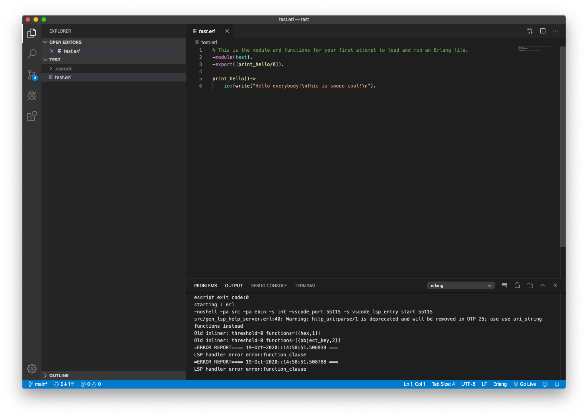
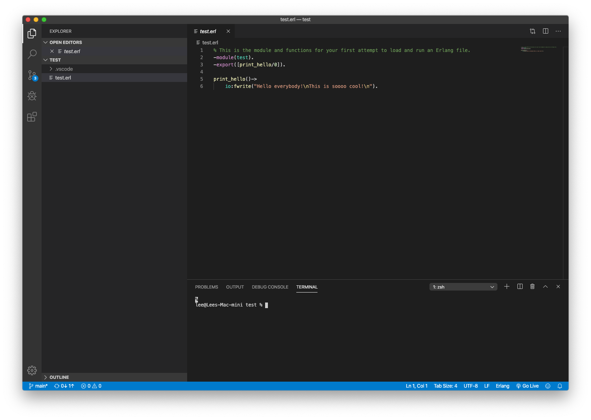
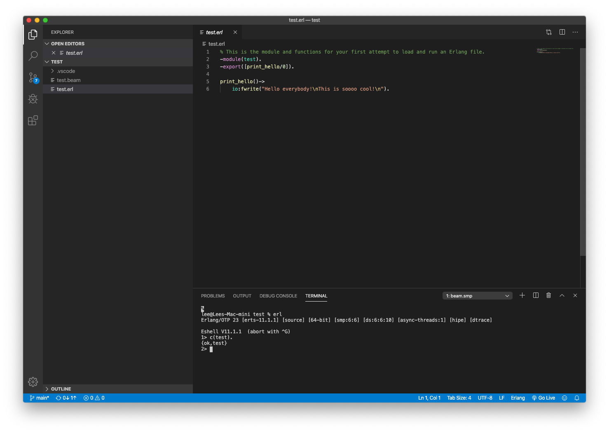
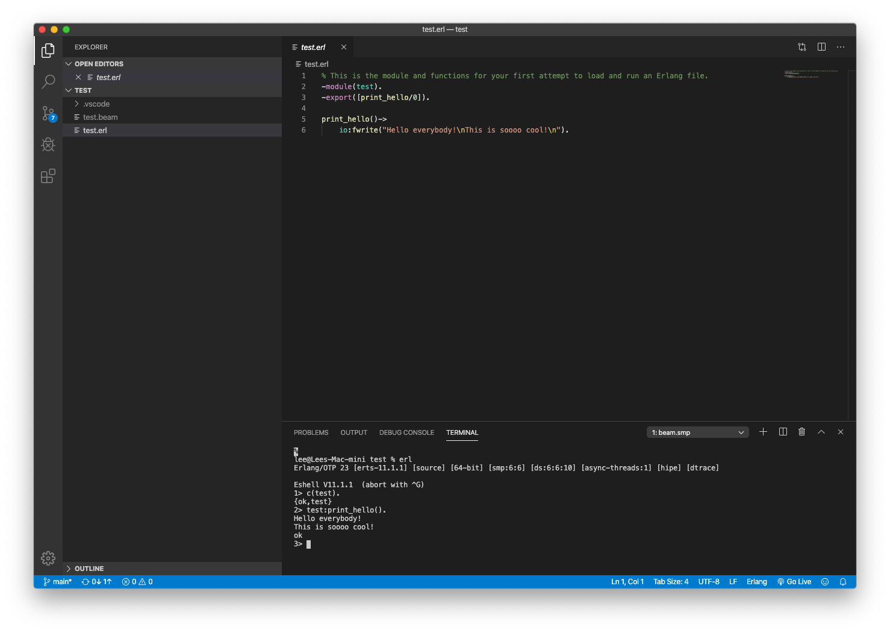

The Why of Erlang
Some Background
The Ericsson corporation in northern Europe had a need. Their old telephone control system was going to be replaced with new hardware. They had created the new hardware, but the design and development of the controlling software collapsed. They needed to replace that development with something else, or loose a lot of money. Thankfully they had been financing Joe Armstrong and others to explore "a better way of programming telephony applications" as part of Ericsson's research lab expenditures since the late 1980's.
In the lab, Armstrong and a few others had been creating and experimenting with a new language they called Erlang. Initially concieved as an internal Ericson language, those responsible, including Armstrong, found that the language worked very well for any system that needed massively concurrent, distributed applications with nearly 100% uptimes. In 1998, the Ericsson corporation open sourced Erlang. Since then, many companies including Google, Amazon, WhatsApp, Digital Ocean, MasterCard, Nintendo, and many others have adopted Erlang as a major part of their design and development core set of tools.
If you want more information on the history of Erlang, Joe Armstrong wrote an article for the ACM outlining how and why Erlang became what it is.
Python and Erlang are Cousins
Take a look at Figure 1. It shows the ancestery of both Erlang and Python. Since Modula is an ancestor of both languages you can expect to see some things in Erlang that remind you of what you learned about coding when you studied Python. An example of this is the concept of a module.

Installations
Before doing anything else, you will need to download and install the Erlang compiler and tools for your OS.
The IDE
The Integrated Development Environment (IDE) selected for this course is Visual Studio Code. Go to the site for Visual Studio Code download the installer for your operating system. When you start the download you will be taken to a page that will help you get started. Since you will be writting in Erlang, add this plugin to VSCode. Ignore all of the hints, steps, and photos on the plugin's page. Those are for using a tool called rebar3. We won't be using rebar3 in this introductory class, but feel free to explore it and the plugin's use of it you feel so inclined and have some spare time.
Please realize that it's OK if you don't understand everything about VSCode and this plugin right off the bat. You'll gradually learn as you run into a need. The reason for adding the Erlang plugin is that it enables color coding for Erlang in VSCode and the showing of help docs for built-in Erlang functions (BIFs) when you move your mouse over a function and type Command (MacOS) or control (Windows).
Test Your Tools
Download and unzip this directory that contains a file you can use to test VSCode and and the plugin you installed on your machine. After going to where you downloaded the file, select it and unzip it.
How to Unzip
Testing VSCode
After the folder is unzipped, run VSCode and select File->Open Folder from the pulldown menu at the top of your screen. Go to the folder, not the enclosed file, highlight it, and then click Open. You should now see this.

On the left of the window under test, select test.erl. You will then see a few messages appear at the bottom of the screen you can safely ignore and the source code for the Erlang source file test.erl.

When you reach this point, you are ready to use the Erlang tools to compile and run code. In this class, we will run all code in a REPL called erl. To do so, select the terminal tab near the bottom of the VSCode window. You should now see something like this.
Next, click and type erl, the REPL's name, in the terminal. You should now see this.

Now, to compile and load the testing code into the REPL, type c(test). including the trailing period. If everything goes right, you will see a new file, test.beam, on the left of the VSCode main window near the top and {ok,test} in the terminal window.
To run any module's function in the REPL, follow this pattern, module_name:function_name(parameters_if_any).
Following this pattern, enter test:print_hello(). in the REPL. When everything works correctly, you will see the appropriate output in the REPL.
Workflow
The work you do using these two tools will flow like this. Each time you are asked to do an assignment, you will create a directory named for the assignment. For example, if you were asked for your assignment to write code that calculated loan payments, you could create a folder called loan_pay_calc. Then, using VSCode, create an appropriately named .erl, Erlang, file. Then add the functions as instructed. Each time you have a function somewhat completed, use the erl REPL to load, compile it, and run it. Then use the output of the function to debug it.
If you follow this pattern for each assignment, you will reduce your workload.